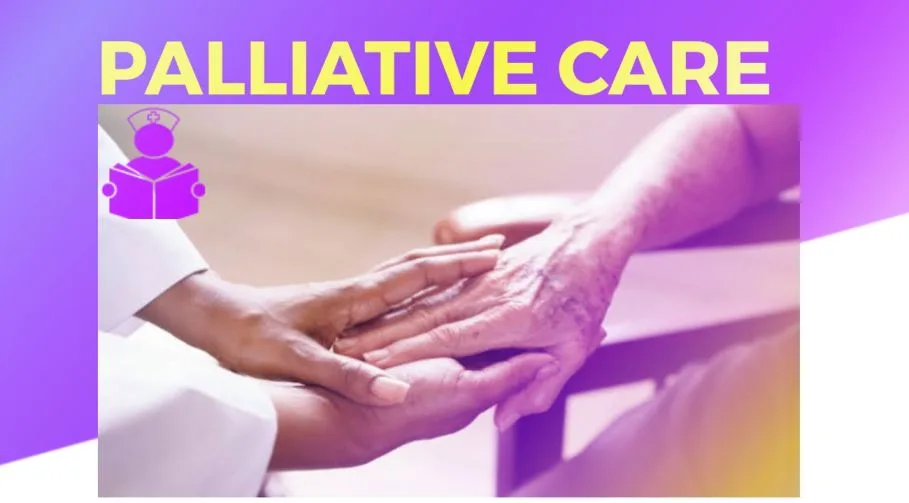

Expanded Nursing Uganda Explanation
Roles of palliative care in Uganda should be understood beyond a short definition. Link the concept to patient history, focused assessment, common risks, nursing priorities, documentation and evaluation of outcomes.
Contents — 13 sections (tap to expand)
01 Palliative Care
Palliative care is an approach that improves the quality of life of patients and families facing the problem associated with life threating illness through the prevention and relief of suffering by means of early identification and assessment and treatment of pain and other problems which are physical , psychological and spiritual. WHO definition
Palliative care is the Active Total Care of patients with life limiting disease and their families, when the disease is no longer responsive to curative medicine.
Palliative care aims at achieving physical symptom relief but also extends far beyond it. It seeks to integrate physical, psychological, social and spiritual aspects of care so that patients may come to terms with their impending death as fully and constructively as they can.
02 **History of Palliative Care**
In 1960`s British Psychiatric John Hinton marked societal neglect and deficiency in the end of the life care. Hospices were sanctuaries provided by religious orders for the dying poor, providing food, clothes and shelter.
Dame Cicely Saunders an oxford trained nurse noted the trouble of dying and the need for improved pain control . She was a doctor, nurse social worker and a writer. She was the founder of the “ Hospice Movement ” in 1918. In 1967 , Dame Cicely Saunders oversaw the building of the world’s first purpose built modern Hospice : St Christopher’s Hospice in London, England.
Saunders gave special care for the dying by providing expert pain and symptoms relief , with holistic care to meet the physical, social, psychological and spiritual needs of the patients and their families and friends.
Initially Hospice was reserved for those with incurable cancer. Now it has moved to include all “ life limiting diseases ” cancer, HIV/AIDS, Neurological disorders, Heart failure
At first, Hospices provided only inpatient care , isolated from mainstream care. Now there is inpatient Hospice care, home based care, hospital based teams and community outreach services.
Hospice is no longer a building it is a philosophy of care ( Active Total Care of patients)
So now, What is Hospice Care, and is it the same or different from Palliative care. Hospice Care Hospice is an umbrella term for the carrying out of palliative care services and is usually a Centre where the team of professional and volunteers offer palliative services to people mainly with life limiting illness **** There is an interface between hospice and palliative care. People often wonder the difference between hospice and palliative care
Therefore hospice is not the building
The word hospice origins from the hospes ( Greek ) and Hospitum ( Latin ) meaning hospitality
The major aim of hospice is to put life in the remaining days of a patient. It gives the possible quality of care for patient and their families from diagnosis of illness through critical episodes, end of life and bereavement support. Patients and their families are guests as they have choices and are encouraged to participate in discussions and make treatments and management choices.
Palliative care is the art and science of providing relief from illness – related suffering. Alleviation of suffering is needed for all patients who have curable and incurable illness . Hospice or end of life care can be used synonymous from palliative.
03 **Hospice in Africa**
Hospice has been established in the following countries: Zimbabwe, South Africa, Kenya, Uganda
In Uganda, Hospice services, ** were started in Nsambya Hospital in 1993 by Dr. Anne Merriman and since then organizations as well as hospitals have come up to offer palliative care services in Uganda such as Hospice Africa Uganda (HAU) and Mild may Uganda.** These service has further been extended to other parts of the Country by training specialist nurses and clinical officers who then deliver this care.
- To provide High Quality African Palliative Care for cancer / HIV AIDS patients in Uganda;
- To strengthen and maintain capacity of HAU(Hospice Africa Uganda) to produce oral liquid morphine;
- To provide high quality palliative care training in Africa;
- To build and strengthen capacity of other African countries to deliver palliative care;
- To strengthen research, innovations, advocacy and networking for palliative care in Uganda and Africa;
- To ensure effective and efficient governance at HAU(Hospice Africa Uganda)
- To enhance financial efficiency and sustainability.
04 **Need for palliative care**
- WHO estimates 9 million new cases of cancer each year (50% in developing countries).
- More than 80% disease presents late and is often incurable.
- Pain occurs in more than 66% of patients with advanced cancer
- 5 million HIV+ people live in sub–Saharan Africa
- 20-50% HIV patients can expect to suffer from severe
****
05 **Philosophy/Roles of Palliative care**
- Affirms life.
- Regards dying as a normal process.
- Neither hastens nor postpones death.
- Relieves pain and other distressing symptoms.
- Integrates the psychological and spiritual aspects of care.
- Offers support systems for patients to live as actively as possible until death
- Offers support systems to help patients’ families cope during the patient’s illness and in their own bereavement.
- Appropriate ethical considerations: Do good; do no harm, patient’s right to decide; and fairness.
06 Attributes of Palliative Care
Palliative care has a range of distinctive characteristics or attributes.
In palliative care, “attributes” refers to the characteristics, features, or qualities that are associated with or define palliative care. These attributes are the essential elements that make up the nature and scope of palliative care as a specialized form of medical care.
Here are the key attributes of palliative care:
- Holistic approach : Palliative care takes a comprehensive approach to address the physical, emotional, psychological, social, and spiritual needs of the patient. It considers the person as a whole and not just the disease.
- Pain and symptom management : Palliative care aims to alleviate pain, manage symptoms, and improve the patient’s comfort level. This involves using a combination of medications, therapies, and other interventions to control distressing symptoms.
- Communication and coordination: Effective communication is crucial in palliative care. The care team works closely with the patient and their family to understand their preferences, goals, and values. They also facilitate coordination between different healthcare professionals to ensure seamless care delivery.
- Patient-centered care : Palliative care respects the patient’s autonomy and individual preferences. It involves shared decision-making, where patients are actively involved in making choices about their care and treatment options.
- Family support : Palliative care recognizes the impact of serious illness on the patient’s family members and caregivers. It offers emotional support, education, and guidance to help them cope with the challenges they may face.
- Continuity of care : Palliative care is not limited to a specific location or time frame. It can be provided alongside curative treatments and is often delivered at different stages of the illness.
- Advance care planning : Palliative care encourages patients to discuss and document their preferences for medical treatment and end-of-life care in advance. This helps ensure that their wishes are respected and followed.
- Bereavement support : Palliative care extends its support to the family even after the patient’s death. Bereavement services help family members cope with grief and loss.
- Interdisciplinary care team: Palliative care involves a team of healthcare professionals with various specialties, including doctors, nurses, social workers, chaplains, and other specialists as needed. This interdisciplinary approach ensures a comprehensive and well-coordinated care plan.
- Dignity and respect: Palliative care emphasizes the importance of treating patients with respect, preserving their dignity, and providing compassionate care throughout their journey.
Palliative care has two components:
- Pain and symptom control: Modern methods are used for pain relief, including oral morphine for severe pain, and symptom treatment and management.
- Supportive care : The psychological, social, spiritual and cultural needs of the patient and the family, including bereavement care, are attended to.
- Focus on quality of life
- Holistic approach
- Multi disciplinary team (MDT)- doctor, nurse, physiotherapist, occupation therapist, social worker
- Patient and family at center of care
- Attention to details
- Availability of essential drugs e.g. morphine
- Peace, comfort and dignity of the patient and family.
07 Principles of Palliative Care
- Patient centered : Palliative care revolves around the patient and their family. The focus is on maintaining hope with realistic goals, supporting the patient and their loved ones throughout different stages of the illness. Sustain hope with realistic goals in order to help patient and families cope in appropriate way through the different phase of the illness.
- Appropriate ethical consideration: There are many ethical issues that arise in care of all patients. Seek to do good or do no harm, patients’ rights must be considered to decide fairly. Palliative care involves navigating various ethical issues. Remember to balance doing what’s best for the patient while respecting their rights and autonomy.
- Continuum of treatment . This involves management of pain and other symptoms i.e. Palliative care begins from the time of diagnosis and extends beyond the patient’s passing. It includes pain and symptom management as well as providing bereavement care for the family after death. (bereavement care).
- Teamwork and partnership : Palliative care requires an interdisciplinary team to address the diverse needs of patients effectively. It is not easy to address all patients’ needs alone. An interdisciplinary team should be established to deal with all the problems. i.e. no single profession can address all issues that cause total pain. Team members share challenges facing the patient and plan effective management of the patient using their skill mix. A palliative care team includes: 1. Nurses 2. Doctor 3. Social workers 4. Religious leaders 5. Teachers 6. Community health providers > Others as appropriate.
- Holistic care approach: Holistic care treats the patients as a whole person, not just as a medical case. This approach focuses not only on physical care, but also psychological (emotional), social and spiritual care. This psychological and emotional support and care should be available for the caregivers as well as the patient, family members, community volunteers, professional care and support workers (health workers, counselors, social workers), before, during and after periods of care giving. Holistic care: this is care of whole person and is more than only drug and physical care
08 Components of holistic care
- Physical care: This involves the assessment and management of pain and other physical symptoms. Its important because if physical symptoms are with them if they controlled other aspects will be different to carry.
- Psychological care: Effective communication skills are crucial in caring for patients holistically. Providing emotional support, active listening, and compassionate understanding help patients cope with the emotional challenges they face.
- Spiritual care : This is important to terminally ill and it includes allowing patients to express their spirituality, praying with them if they request for arranging for an appropriate leader to visit them.
- Family support: The terminal phase of illness is often very difficult for patients’ family. Support therefore needs to be offered to the family. It includes spending time, listening and giving support to them.
- Social care : This incorporates discussion of social and family issue e.g. This could include considering the well-being of young children who may become orphans and discussing financial matters that can impact the patient and their family.
09 Models of Palliative Care
- Health facilities based: Palliative care is provided either in hospital at the outpatient department or in other clinics as designated by the in-charge. Health Centers IV and Ill with palliative care trained health workers provide palliative care services using a facility palliative care team.
- Health facility Out-reach programs: specialist palliative care health workers travel to other center to provide palliative care. Palliative care in this modal is provided by palliative care trained health workers. The team moves to the community to provide palliative care services closer to the community. Facility outreach programs are important in that they bring the services nearer to the people. Hence patients do not have to walk long distances and a mass of people can be seen within their villages.
- Roadside clinics/stopovers: This is a model of care that enables patients who live far away from health facilities to access palliative care. Health care providers plan with patients and their caregivers to meet- in identified place along the route or on their way to an outreach. They make a stopover in an agreed place. The place location can be a trading Centre, under a tree, at a particular signpost or at a school.
- Facility day care: This is when a day is set aside for the patient and their caretaker to spend time with other patients in at the facility. This facility could be a hospital, health Centre a hospice. This activity enables recreation as well as socialization. Patients get to share their challenges encounter during the disease trajectory arid even counsel themselves. They interact as they enjoy lunch or tea, they also get an opportunity to see their nurses or doctors at the site and have they needs attended to.
- Community day care: It is similar to facility day care except it is done within the community. Health care workers move to the community and spend the day with patients at a designated area in the community, it could be at the church, health Centre community hall or someone’s home.
- Home based palliative care model: This means a delivery of a comprehensive package of care to the patient and the family at home. The package includes spiritual, psychological, pain and symptom management as well as support in activities of daily living. This model of care is best provided by a specialist palliative care team working in partnership with trained community health volunteers.
Services offered during home based palliative care:
- Basic physical care such as recognition of symptoms; basic treatment and symptom management
- Basic nursing care, such as positioning and mobility, bathing, wound cleaning, skin care, maintaining basic hygiene, oral care, taking medication.
- Psychosocial support and counseling: being with the patient and family during a difficult time, providing listening and understanding, sharing a quiet moment, helping the family to access legal support.
- Preventing transmission of infections such as HIV testing, disclosure, condoms, safe water
- Provide spiritual support: listening to patients and families’ spiritual troubles and anxieties, praying with the patient, and preparation for death.
- Household assistance- support patients with practical support such as washing clothes, cleaning, shopping
- Providing health promotion: disease prevention such as HIV, TB
- Training care takers in basic nursing skills and care.
Advantages and disadvantages of each model
- Palliative Care Model Advantages Disadvantages
- Health Facilities Based – Accessible within health facilities – May not reach patients in remote areas
- – Utilizes facility-based palliative care team – Limited to patients who visit health centers
- – Expert care provided by trained health workers
- Health Facility Outreach – Brings care closer to the community – Limited to specific outreach locations
- Programs – Allows for mass outreach and care provision – Requires additional resources for travel
- – Utilizes trained palliative care specialists
- Roadside Clinics/Stopovers – Enables care for patients in remote areas – Requires planning and coordination for stopovers
- – Convenient for patients and caregivers on the go – May have limited medical resources during stopovers
- Facility Day Care – Provides recreation and socialization for patients – Limited to designated facility and day
- – Allows patients to interact and share experiences – Patients may require transportation to the facility
- Community Day Care – Brings care directly to the community – Limited to specific designated areas
- – Enhances community involvement and support – May lack necessary medical equipment and supplies
- Home-Based Palliative Care – Provides comprehensive care at home – Requires a specialized palliative care team
- Model – Allows for spiritual, psychological, and symptom – May be challenging in remote or underserved areas
- management in the comfort of the patient’s home – Depends on the availability of trained volunteers
- – Supports the patient and family in daily activities
- Perception and recognition : many people still fear palliative care because they link it to death and many do not want to admit that they are dying. It is also common with health worker, policy makers and others.
- Policy development; sustainable, affordable and effective palliative care must be an integral of a country’s health system. To achieve this there must be coordination with all health sectors. Some policies prohibit use of oral opioids, so advocacy for change is important
- Education: health providers and community members need to be educated on diagnosis, classification and application of holistic approach. Training should be in medical/nursing schools
- Drug availability: there are limited recourses including limited drug budget a palliative drugs are given priority because they are for symptoms relief. It is important for these drugs to be included in the essential drug list.
This quiz is for logged in users only.
Time's up
10 Nursing Uganda Clinical Lens
Use Hospice concept as a practical nursing topic, not only a memorized definition. Adapt assessment and care to age, weight, development, caregiver knowledge and family support.
- What to understand first: define hospice concept, identify the normal or expected pattern, then explain what changes when the patient is unwell.
- Why it matters in care: the nurse must recognize risk early, explain findings clearly, document accurately and know when to escalate.
- How to revise it: connect each point to assessment, nursing diagnosis or care problem, intervention, rationale and evaluation.
11 Assessment Guide
- Airway, breathing, circulation, hydration, temperature, feeding, activity and danger signs.
- Weight-based medicines, immunization status, growth, development and caregiver concerns.
- Signs that may be subtle in children, including lethargy, poor feeding, fast breathing or convulsions.
12 Nursing Priorities, Rationales and Outcomes
- Use age-appropriate communication and involve the caregiver.
- Prevent dehydration, hypothermia, medication errors and delayed referral.
- Teach home care, danger signs and follow-up clearly.
The rationale for these priorities is patient safety: nursing actions should prevent deterioration, reduce discomfort, support recovery and create clear evidence for the next caregiver.
- Expected outcome: The child is clinically improving, caregiver instructions are understood and follow-up is arranged.
13 Patient Teaching and Revision Check
- Explain hospice concept in simple language the patient or caregiver can repeat back.
- Teach warning signs, medicine or follow-up instructions, hygiene or lifestyle points where relevant.
- For exams, prepare a short answer using: definition, causes or risk factors, signs, assessment, management, complications and prevention.
- For ward practice, document baseline findings, actions taken, patient response and the plan for review.
Illustrations and Diagrams (34)



26 more diagrams available — open the lesson for full illustrations.
Related Video Lectures
Watch nursing lecture videos on YouTube for this topic. Opens in a new tab.
Watch on YouTubeExternal link: YouTube may use its own cookies and terms. Nursing Uganda is not affiliated with YouTube.